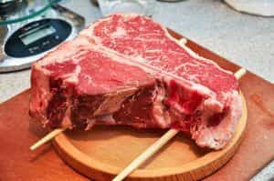
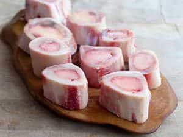
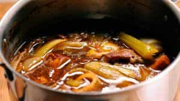

Quintus can be found at qcurtius.com. He is the author of the books On Duties, Thirty Seven, Sallust: The Conspiracy Of Catiline And The War Of Jugurtha, and other books. His work has been reviewed at Taki's Magazine. He can be followed on Twitter


I love meat, and I love bones. And we should try to pair these two things together whenever we can. Professional chefs will tell you that the things always taste better with the bones left in. But due to the increasingly sanitized society we live in, we’re losing touch with the beauty and taste of bones. I wanted to write this article in praise of bones, in the hope that you consider making them a part of your culinary rotation.
I think my love for bones began when I read stories about how primitive humans would roast huge leg-bones of prey, and then smash them with stone tools to extract the rich marrow contained inside. Scientists tell us that bone marrow is packed with fat and nutrients, and that these things helped the human brain to grow.
My goal here is to present my favorite dishes involving bones. Finding bones is not difficult. My recommendation is to seek out a good butcher in your area and develop a rapport with him. These guys love it when customers take an interest in their trade, and will be more than willing to help you get what you need.
If you are in the United States, I also suggest going to butchers at Hispanic meat markets, if you can find them. Every large city has them. Traditional ways of cooking meat are still common in Hispanic communities, and you should take advantage of this.

There no way to top this recipe for simplicity and rustic power. Porterhouse steak is expensive these days, but every now and then you should try to treat yourself to this specialty of Tuscany. You have mouth-wateringly good steak coated with herb-infused olive oil. Make sure you get a steak with a good-sized bone in it. Here is how you put it all together.
Eating bone marrow is about as primeval and Paleolithic as you can get. For this dish, I would go to my Hispanic butcher and ask for thick marrow bones. Believe me, these guys know exactly how to cut bones up.
The nations of Central and South America are not squeamish about bones at all. Neither are the French, who love their bones. When you feast on this dish, remember that you are reaching across the millennia to what our ancient ancestors feasted on after a glorious hunt. This is not a light dish: it is very fatty and oily, as it should be. Wimps and wussified vegetarians need not apply here, it goes without saying.

Here are the steps to make good roasted marrow bones:
Beef stock made with bones is one of those kitchen fundamentals that everyone should know how to make. You can use stock for nearly anything: stews, soups, cooking rice, whatever. You can even sip it straight. I don’t know all the chemistry behind it, but there are great things in beef stock cooked with bones. Weightlifters, take note of this. My butcher has told me that veal bones are better for this recipe because they have more collagen.

Personally, I prefer what is called a brown stock: that is, the beef bones are roasted before you boil them. The end result is darker and stronger flavored. Making stock is flexible, and you can adjust the portions below to suit your needs.
So these are three of my favorite bone recipes. There are literally dozens of recipes I could have chosen, but these were the ones I thought were most useful. I hope you’ll find a way to incorporate bones into your eating habits. You can do it not just by trying these recipes, but by going out of your way to choose meats (beef, chicken, even fish) that have the bones in them.
It’s the way things ought to be.
Read More: How Jeb Bush Destroyed The Bush Dynasty And His Own Campaign